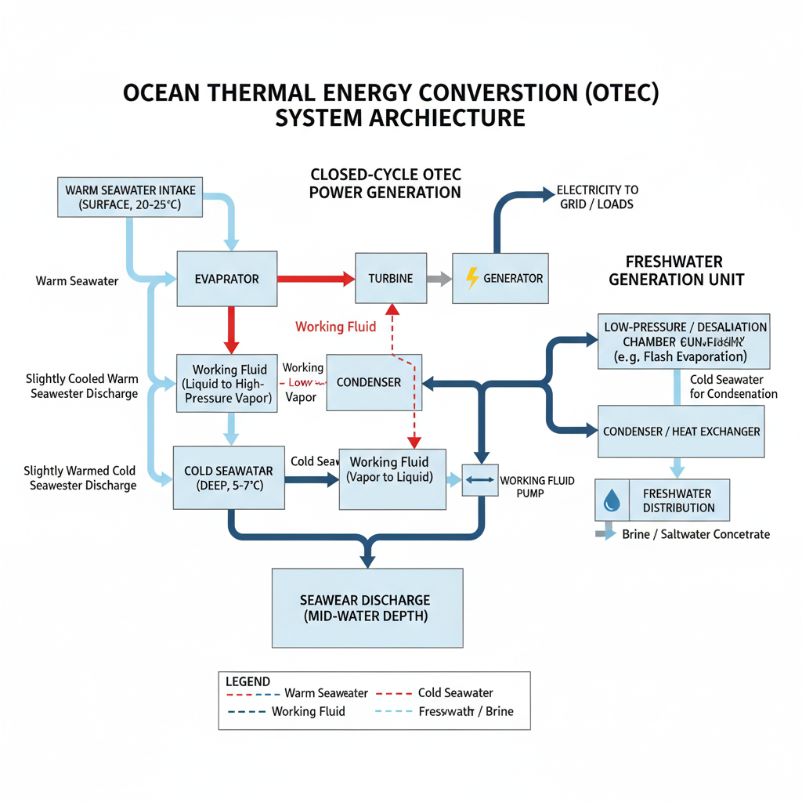

🌋 Activity 3 – OTEC System for Electricity & Freshwater
Explanation: Explanation of Blocks:
Warm Seawater Intake:
Function: Pumps warm surface seawater (typically 20-25°C) into the system. Location: Near the ocean surface. Evaporator: Function: Warm seawater flows through heat exchangers, vaporizing a low-boiling-point working fluid (like ammonia or R-134a) at low pressure. Process: The heat from the warm seawater is transferred to the working fluid, turning it into a high-pressure vapor. The warm seawater is then discharged back to the ocean (slightly cooled). Turbine: Function: The high-pressure working fluid vapor expands through a turbine, spinning it. Process: The mechanical energy from the spinning turbine is converted into electrical energy by a connected generator. The pressure and temperature of the working fluid vapor drop after passing through the turbine. Generator: Function: Converts the mechanical energy from the turbine into electrical energy. Output: Electricity, which can be sent to a grid or used directly (e.g., for onshore consumption or powering the OTEC plant's pumps). Condenser: Function: Cold deep seawater flows through heat exchangers, cooling and condensing the working fluid vapor back into a liquid. Process: The cold deep seawater (typically 5-7°C from depths of 500-1000 meters) absorbs heat from the working fluid, causing it to condense. The now slightly warmed cold seawater is then discharged. Cold Seawater Intake: Function: Pumps cold deep seawater (typically from depths of 500-1000m) into the system. Location: Deep below the ocean surface, requiring a long intake pipe. Working Fluid Pump: Function: Pumps the condensed working fluid liquid back to the evaporator, completing the closed OTEC cycle. Process: Maintains the circulation of the working fluid. Freshwater Generation Unit (Optional but Integrated): Function: Utilizes the temperature difference created by the OTEC process, or directly the vacuum created in Open-Cycle OTEC, to desalinate seawater. In a closed-cycle setup, it often leverages the cold seawater discharge. Process (Example for Closed-Cycle): The discharged cold seawater is very cold. If a small portion of it is brought to a low-pressure vacuum chamber, it can flash evaporate, leaving salt behind. The vapor is then condensed by another colder source (e.g., another portion of the cold seawater or a dedicated chiller), producing freshwater. Alternatively, an Open-Cycle OTEC directly flashes warm seawater into steam, which drives the turbine and is then condensed into freshwater. This diagram focuses on a common approach where a humidification-dehumidification (HDH) or low-temperature multi-effect distillation (LT-MED) unit might be integrated, using thermal energy from the OTEC process or the cold water for condensation. For simplicity in the block diagram, it represents the overall function. Freshwater Storage/Distribution: Function: Collects and stores the desalinated water for use. Seawater Discharge: Function: Returns the used warm and cold seawater to the ocean, usually at intermediate depths to minimize environmental impact.